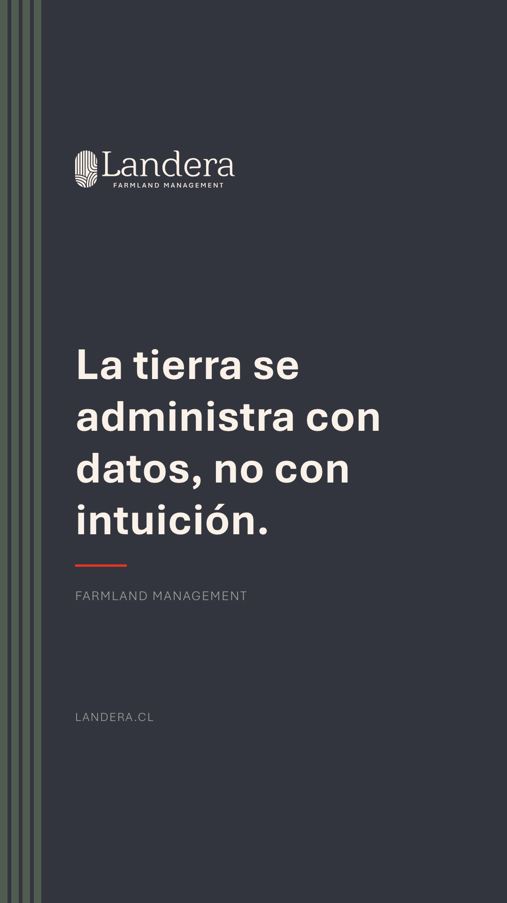
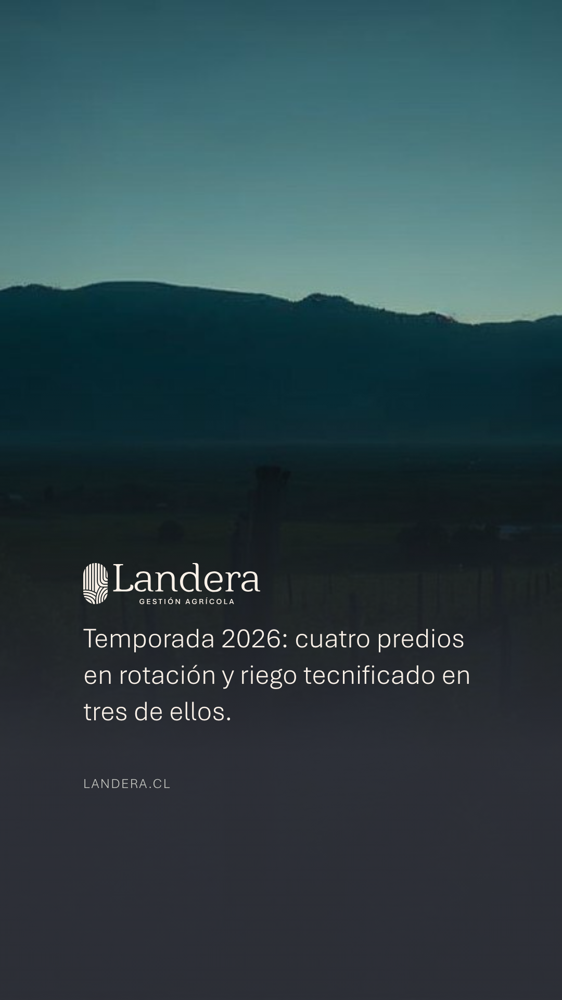

Aplicaciones
Ecosistema digital V: Instagram
Tres familias, sin secuencia
El contenido se construye con las tres familias de la
lámina 24: cifra, mensaje y territorio. No hay un orden
obligatorio: hay una proporción.
La proporción
En Instagram manda el territorio: al menos la
mitad de las publicaciones del mes son fotografía. Cifra y mensaje se
reparten el resto. Nunca tres piezas seguidas de la misma familia.
Las piezas
Las tres plantillas de feed y las tres de historia se usan tal
cual (kit digital). Cambian el dato, el titular y la foto; no cambia la
construcción.
Historias
250 px arriba y 340 px
abajo quedan libres para la interfaz. El perfil lleva el isotipo sobre crema.
El perfil · un mes
landera.cl
9publicaciones
412seguidores
36seguidos
Landera · Farmland Management
Administración de campos e inversión agrícola en Chile.
landera.cl
Seguir
Contactar
5 territorio · 2 cifra · 2 mensaje
Historias · las tres familias


landera.cl

landera.cl

landera.cl
Cifra · mensaje · territorio — la interfaz tapa arriba y abajo
Tres meses distintos, el mismo sistema
Mes de cosecha5 territorio · 2 cifra · 2 mensaje
Mes de resultados4 cifra · 4 territorio · 1 mensaje
Mes institucional3 mensaje · 4 territorio · 2 cifra
Sin territorio · tres iguales seguidas
Invariables
Tres familias y tres plantillas por formato: no se diseña una cuarta · al menos la mitad del mes es territorio · nunca tres seguidas de la misma familia · logotipo en toda pieza (crema sobre foto y tinta) · historias con 250 px arriba y 340 px abajo libres · avatar con isotipo sobre crema · fotografía según la lámina 16.
Variables
El orden de las publicaciones · la proporción entre cifra y mensaje según el mes · cuántas historias y cuándo · foto vertical u horizontal recortada a cuadrado · con o sin bajada en el logotipo · el texto del pie (según la guía de tono).
28 · Aplicaciones
Landera · Manual de marca